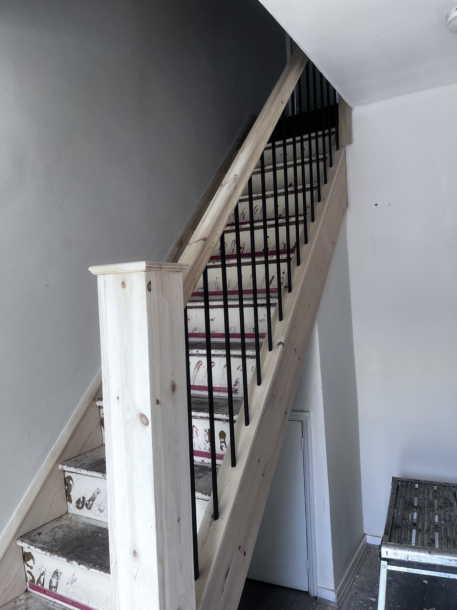
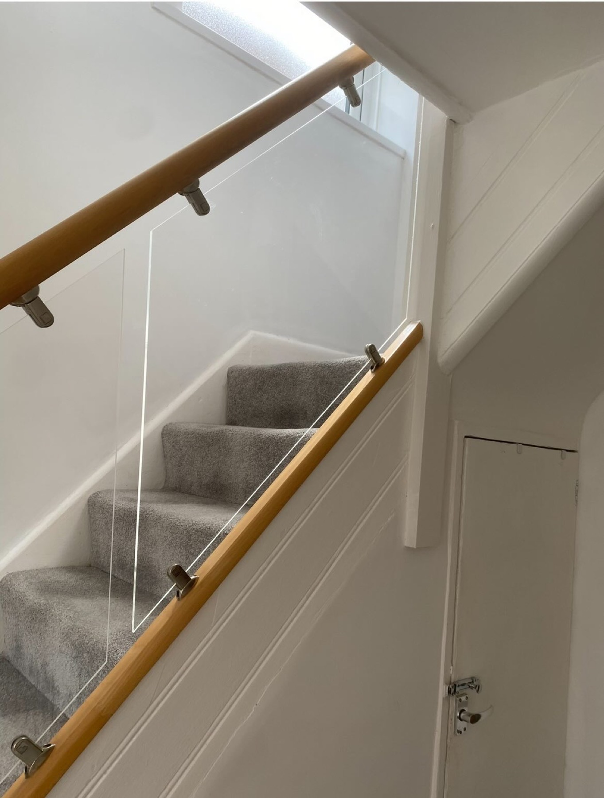
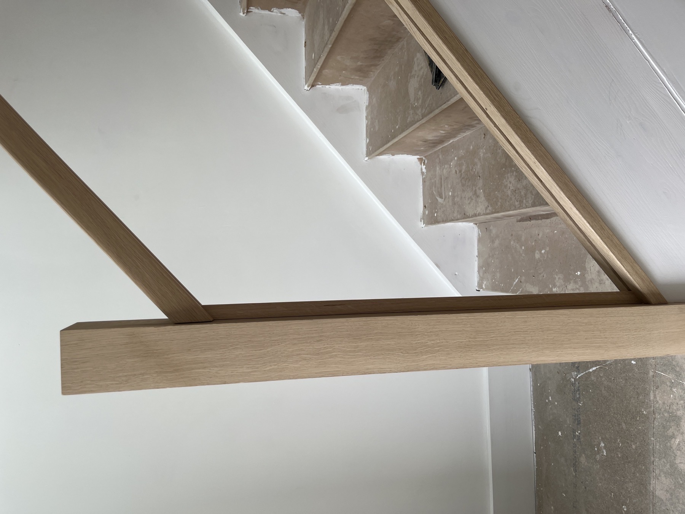

Oak & Glass Staircase Refurbishments
Upgrade existing stairs with oak handrails, base rails, newel posts, cladding and glass balustrades for a clean, modern finish.
Get a staircase quote
Wirral, Liverpool, Cheshire & North Wales
Modern staircases. Better storage. Proper joinery. Transform a dated staircase into a modern oak and glass feature with bespoke handrails, newel posts, cladding and clear glass balustrades fitted by Trident Joinery Services Ltd.
Trident Joinery Services helps homeowners upgrade tired staircases with high-quality oak finishes, clean glass panels and careful joinery that looks made for the property.
From oak and glass refurbishments to under-stair storage, door hanging and fitted joinery, every job is approached with tidy workmanship, practical advice and a finish that suits the home.
Staircase refurbishments
A staircase refurbishment can make the whole hallway feel brighter and more modern without always needing a complete replacement.
Upgrade existing stairs with oak handrails, base rails, newel posts, cladding and glass balustrades for a clean, modern finish.
Get a staircase quoteReplace dated spindles with fitted glass panels that open up the hallway and bring more light through the staircase.
Cover tired staircase elements with solid oak finishes for a warmer, more premium look without always needing a full replacement.
Sharp detail work on handrails, newel posts, base rails, trims and finishing touches that make the refurbishment feel properly built in.
Why oak and glass
Oak handrails, newel posts and cladding bring warmth, while glass panels open up the space and let more light through.
Each staircase is measured and finished around the existing property, with options for oak, glass, trims and practical storage.
Work is carried out carefully, with attention to the details that make a refurbishment look properly built in.
Before and after
Before-and-after projects show how oak, glass and well-finished joinery can completely change the feel of a hallway.



Supporting services
Traditional staircase repairs, replacement parts, cladding, handrails, spindles and practical upgrades alongside the oak and glass work.
View galleryMade-to-measure cupboards, pull-out storage and neat timber solutions that turn awkward under-stair space into useful storage.
View galleryInternal door fitting, replacement doors, ironmongery, handles and clean finishing for homes and renovation projects.
View galleryLoft hatches, access upgrades, timber loft entrance details and practical storage solutions fitted neatly into the property.
View galleryKitchen installation, finishing joinery, panels, trims and practical fitting work for home improvement projects.
View galleryTimber driveway gates, side gates and practical external joinery built to suit the property and fitted with tidy, reliable hardware.
View gallerySkirting, architraves, cabinetry, timber feature work and renovation joinery for residential and commercial customers.
View galleryProject gallery
Request a quote
Call, text or WhatsApp a few photos of the current staircase, your location and the finish you have in mind. Trident Joinery Services can advise on options for oak, glass and wider joinery work.